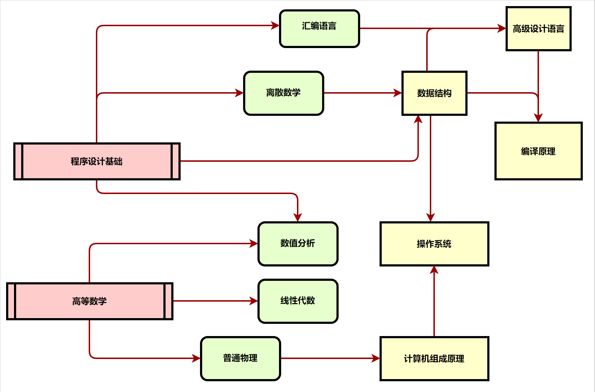

这不过是将来之事的前奏,也是将来之事的影子
This us only a foretaste of what is to come,and only the shadow of what is going to be
Part I

Part II
Matrix67的博客
牛客网，在线编程训练
Java工程师学习路径
安卓工程师学习路径
Web前端工程师学习路径
C语言学习攻略
C++远征攻略
菜鸟教程
计算机类电子书下载
Part III
进入大学几个月以来，通过学习《计算机导论》这门课程，我对这门专业有了一定的了解和认识。
21世纪的到来，让计算机的发展速度不断增加，从原来的台式计算机到笔记本电脑，再到新型的量子计算机、光子计算机、生物计算机和纳米计算机，再有渐渐越来越多新技术的出现，使得计算机的作用越来越强大，功能越来越丰富。
计算机科学来源于对数理逻辑、计算模型、算法理论和自动计算机器的研究，形成于20世纪30年代后期。计算机科学是用来研究计算机设计、制造及计算机信息获取、存储表示、处理控制等理论和技术的学科，是描述和变换信息的算法，包括其理论、分析、设计、实现和应用的系统研究。计算机科学是一门包含各种各样与计算和信息处理相关主题的系统学科，从抽象的算法分析、形式化语法等，到更具体的主题如编程语言、程序设计、软件和硬件等。
计算机的发展，不仅仅只是一个工具的进步，更多的是成为一种文化、一种生活融入到社会各个领域。
计算机给人们带来了便利。纵观现代社会，电脑所起的作用实在是太大了，在某些方面连人类都望尘莫及。电脑正用它那扎实肯干，永不疲倦的作风向人类展示着它的实力和魅力。如今，在各行各业我们都能找到电脑的身影。比如教育，家庭，工业，商业，农业等等。
随着“大数据时代”的到来，我觉得“大基础”的重要性不但没有降低，反而更加凸显出来，计算机的提升空间还是不可想象的大，所以我想理解计算机的本质才能不断创新，不断提高，从而应对不可预知未来。
Part IV
一.自我认知
1 性格：善于独立思考，注重团体力量，善解人意，做事全力以赴，有耐性，刻苦，实际而热情，意志坚定、有毅力;但沟通能力不足，不善表达。
2 兴趣：爱好阅读，也注重看有所求，体育方面兴趣十分广泛，擅长乒乓球，羽毛球等。
4 能力：具备敏锐的观察力，在吸取他人的长处时不忘自己的创新。多数时候是冷静，慎重的。机敏、领悟力较好，富直觉能力。
二.职业认知
全球现处于第三次工业革命， IT行业在其中举足轻重。这一时期定会仍很大的机遇和契机，我们正处于这一伟大的时机。我国在经过三十年改革开放，综合国力得到了显著的提升。
随着成功举办、参加了多次国际性的活动，更是使我国成为国际性的大国。全球新一轮的产业转移正推动我国由IT大国向IT强国转变，这将进一步刺激国内对计算机专业人才的需求。
现在我国需要的是高技术人员。社会需要的更多的是高技术性的IT人才，用人单位更是提高这方面的门槛。现在的计算机已经得到了极广的普及，各高校都很重视这方面的培养，企业也重视培训。在大学生就业形势危机的情形下，IT行业也是日趋激烈，需要我努力加强自己水平。
三.具体的规划设计
大一：调整大学学习状态，确立奋斗目标方向，并为之做好一定的基础。打牢专业基础知识，至始至终重视英语的学习，对计算机有一定系统的了解。对自己将要学习的通信专业有全面的认识，积极的参加学校各项活动，提高自己的沟通交流能力。多看些有关自己专业方面的书籍的新闻。
大二：加强专业知识的学习，对以后的工作取向和目标进一步的明确和必要的细化。确保专业课的优异过关，并利用课余时间对自己感兴趣的一些有关方面的书籍学习，掌握基础的知识。对以后的工作根据当时的形势做简要的分析和安排。学习好常用的计算机英语。
大三：保持良好的心态，注意保持身体的健康。制定冲刺计划，备战必要的考试。了解市场、IT行业的走向和社会需求，能够的话亲身实践。清楚地认识自己，确立了自己的努力方向和职业定位，找好一家实习单位。不断的了解、完善自己。